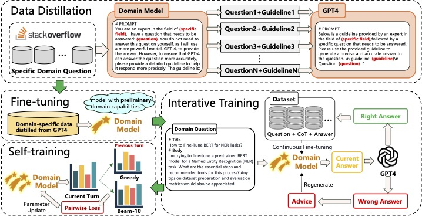
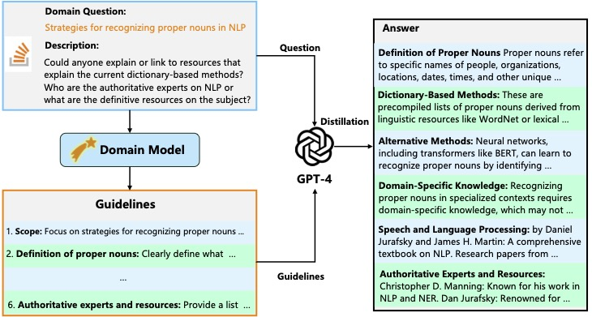
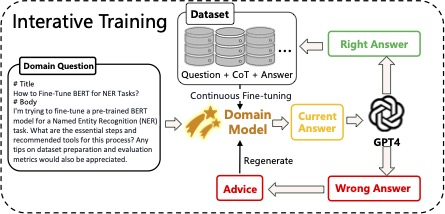

METEOR: Evolutionary Journey of Large Language Models from Guidance to Self-Growth
📝 Introduction
METEOR: Evolutionary Journey of Large Language Models from Guidance to Self-Growth a weak-to-strong evolution framework that enables LLMs to progressively evolve from supervised guidance to autonomous enhancement. While LLMs have demonstrated remarkable general capabilities across various applications, developing highly versatile LLMs requires substantial computational resources and financial investment, making them impractical for many domain-specific scenarios where specialized expertise is required. Current approaches to domain specialization either rely on costly external enhancements limited to large models, struggle with manual data annotation scalability, or remain bounded by their supervisors’ performance ceiling. To address these limitations, METEOR introduces a comprehensive three-stage evolution framework that guides models from basic domain knowledge acquisition through supervised learning to autonomous capability enhancement via progressive computational scaling.
💡Motivation
The primary challenges in developing domain-specific expert models are:
-
Knowledge Distribution Alignment: Traditional knowledge distillation from strong models faces distribution misalignment issues, limiting weak models’ ability to effectively utilize the distilled knowledge. This necessitates a weak-to-strong strategy where the weak model’s distribution guides the knowledge transfer process.
-
Evolution Beyond Initial Capabilities: While knowledge distillation provides basic domain capabilities, models often struggle with complex domain-specific problems. This challenge calls for:
- Structured feedback through reflection-based learning
- Progressive capability enhancement through scaled computation
- Autonomous improvement beyond supervisor limitations
Our METEOR framework addresses these challenges through a three-stage approach: initial fine-tuning for basic domain knowledge, iterative training with strong model guidance, and self-training for autonomous improvement.
🔍Methodology
The METEOR method consists of three distinct phases: weak-to-strong data distillation, iterative training, and self-evolution strategies. In each phase, the model fully utilizes its existing capabilities to strengthen its domain expertise. Each subsequent phase builds upon the advancements made in the previous one, employing different techniques to further evolve the model.
Weak-to-strong Domain Data Distillation
Illustration of the weak-to-strong knowledge distillation process. Initially, a domain question is input into the domain model to obtain a guideline. The strong model then uses this guideline, provided by the weak model, along with the original question, to generate and distill domain-specific data.
Data Refinement and Iterative Training for Domain-Specific Models
Illustration of he iterative evolution process guided by a strong model. Upon receiving domain-specific data, the model employs CoT reasoning to generate answers and reasoning paths. These are evaluated by GPT-4, which provides confirmation if correct or offers suggestions for refinement if incorrect. This iterative process continues until the answer is validated or the maximum iteration limit is reached.
Algorithm: Data Refinement and Iterative Training
Input: Question set Q, Model M, GPT-4, Maximum iterations N, Batch size K
Output: Updated Model M
training_buffer = {}
for Q in Q:
history = {}
while n < N:
if n = 0:
R_n, A_n = M(Q) # Initial attempt
else:
R_n, A_n = M(Q, guide_n) # Guided attempt
status, explanation, guide = GPT-4(Q, R_n, A_n)
history.append(R_n, explanation)
if status = "CORRECT":
training_buffer.append(ConvertToTrainingData(Q, history))
if len(training_buffer) = K:
M = UpdateModel(M, training_buffer) # Fine-tune model
training_buffer = {} # Clear buffer
break
n = n + 1
return M
🔬Experimental Setups
Datasets
We use the field of advanced computer education as the specific domain to validate the effectiveness of the proposed Meteor method. To obtain high-quality domain data, we scraped data from Stack Overflow across four categories: Machine Learning (ML), Deep Learning (DL), Natural Language Processing (NLP), and Computer Vision (CV), totaling 10,276 entries.
| Category | ML | DL | NLP | CV | TOTAL |
|---|---|---|---|---|---|
| Scale | 4605 | 2092 | 1881 | 1698 | 10276 |
Metrics
We use GPT-4 as a judge to evaluate both data quality and model performance. When comparing the distilled data quality with and without the use of guidelines, GPT-4 is used to score the data, where higher scores indicate better quality. In evaluating the domain-specific answers generated by the model, GPT-4 provides scores based on five criteria: accuracy, completeness, relevance, coherence, and reliability, allowing for a comprehensive assessment of the model’s domain capabilities.
📈Main Results
| Model | Accuracy | Completeness | Relevance | Coherence | Reliability | GPT-4 Score |
|---|---|---|---|---|---|---|
| LLaMA3 w/o METEOR | 21.3% | 27.8% | 25.6% | 19.9% | 17.8% | 5.02 |
| LLaMA3 w METEOR | 78.7% | 72.2% | 74.4% | 80.1% | 82.2% | 9.17 |
| Qwen2 w/o METEOR | 31.6% | 36.5% | 39.7% | 36.5% | 32.9% | 6.88 |
| Qwen2 w METEOR | 68.4% | 63.5% | 60.3% | 63.5% | 63.5% | 9.28 |
We compared the performance changes across various dimensions before and after applying the Meteor method for domain capability evolution of LLMs. For the accuracy, completeness, relevance, coherence, and reliability, we generated responses to test set questions using both the Meteor-trained LLMs and the non-Meteor-trained LLMs. As shown in this table, after the Meteor evolution, LLaMA3-8B-Chat and Qwen2-7B-Instruct achieved improvements. dditionally, the GPT-4 Score after evolution was significantly higher than before, demonstrating the effectiveness of the Meteor method.
🌟 For more detailed experiments, see our paper.